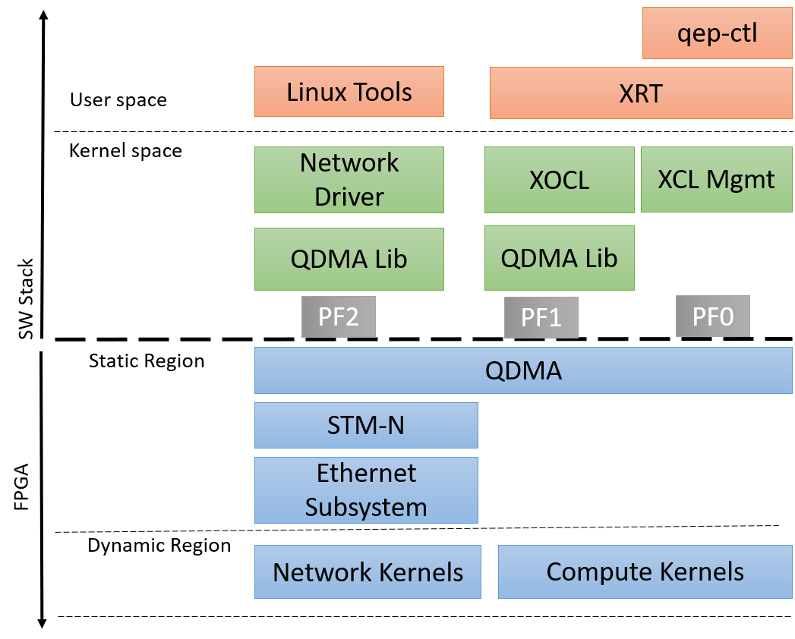

System Overview¶
QEP has three PCIe physical functions - PF0 for device management, PF1 for compute acceleration and PF2 for Network acceleration. The Ethernet subsystem added to the static region of the shell is accessible to the host via PF2.
For details on Hardware Features refer to Hardware documentation on the QEP Lounge.
The high level system overview with Linux network driver for packet processing is shown below:

QEP Linux kernel network driver supports the following list of features:
Hardware Features¶
- 100G Ethernet MAC
- QDMA with 256 queue pairs for network traffic
- Streaming Traffic Manager for Networking (STM-N)
- Security block for packet filtering based on MAC address and VLAN ID
- TCP and UDP checksum offload for IPv4 packets
- Receive Side Scaling (RSS) support for IPv4, IPv4 TCP, IPv6, IPv6 TCP packet types
Software Features¶
Standard Network Device Operations
Ethtool operations to support configuration of various parameters of QDMA and CMAC
Module parameter to enable the driver in loopback mode
- Netdevice Features
- NETIF_F_IP_CSUM (Suport checksum offload of TCP/UDP over IPv4)
- NETIF_F_RXCSUM (Support Receive checksumming offload)
- NETIF_F_RXHASH (Support Receive hashing offload)
- NETIF_F_SG (Support Scatter Gather)
- NETIF_F_HIGHDMA (Support SKBs located in high memory)
- IFF_PROMISC (Support Promiscuous mode)
DebugFS Support
SW Versioning
Note: Refer to the Driver Design section for the list of supported Net Device and Ethtool operations